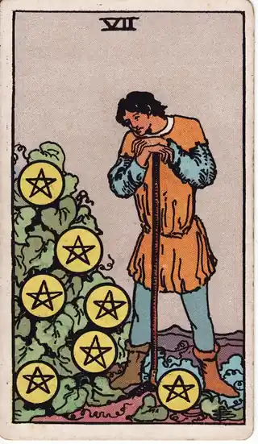

READING
A way of choosing without regret is not "getting the right answer," but "choosing in a way you can accept"
(updated ) · DECIDE. editors

Even after you've decided, "I should have gone with the other one" won't leave your head. Even before choosing, you can't decide because that regret frightens you. After a big purchase, after a job change, after an invitation you turned down. Regret follows long after a decision.
To say it up front: the goal of this page is not "to become a person who doesn't regret." The goal is to choose in a way where, however the result turns out, you can say "even so, I'm glad I chose this." You can't aim for zero regret. But the time you spend being dragged by regret can be shortened by how you choose.
When we're searching for a "way of choosing without regret," we are usually trying to find the "right option." But for the big choices in life, there is hardly ever a right answer prepared in advance. That's because the meaning of the result changes depending on how you spend your time after choosing. The cards are used not to tell the future, but as a "lens" for looking at your own thinking again.
There are two kinds of regret
Regret is often said to divide broadly into the following two.
- Regret from doing: Regret when you chose and acted, and things didn't go well
- Regret from not doing: Regret over what you didn't choose, and didn't move on
Regret from doing becomes easier, as time passes, to accept as "learning" or "experience." On the other hand, regret from not doing is said to remain for a long time in the form of "if only, back then." It's not that one is right, but knowing which kind of regret you tend to drag out gives you a clue for how to choose.
Perspective 1: Does it match your own values?

The card The Lovers is a card that symbolizes not only love, but "choice" itself. Its keywords are "choice," "harmony," and "matching values."
Asked from this card's perspective, it becomes this.
Does this choice harmonize with what I want to value?
Regret deepens not so much when the result was bad, but when you chose not by your own values, but by the expectations around you or by appearances. Before comparing whether the conditions are good or bad, try writing out about three things for "what do I want to value?"
- Income and stability
- Free time and discretion
- Connections with people, and the real feeling of being of use to someone
When you rank them, the axis for comparing your options becomes clear.
Perspective 2: Seen over a long time frame, does it look likely to grow?

Seven of Pentacles is the figure of a person who has stopped their hands before grown crops and gazes at them intently. Its keywords are "judging," "waiting for growth," and "mid-course evaluation."
Right after you've chosen, any choice comes with anxiety and a sense of discomfort. The perspective of Seven of Pentacles reminds you not to judge by the immediate result alone.
- One month from now, half a year from now, three years from now, how does each look likely to be?
- Even if it doesn't bear fruit right away, is it a choice you want to keep growing?
- Can you decide in advance when you'll review it partway through?
Just deciding "I'll review it once after half a year" lightens the pressure when you choose considerably.
Perspective 3: Can you picture a plan for after you've chosen?

Two of Wands is drawn as the figure of a person holding a globe in hand and looking out into the distance. Its keywords are "planning," "outlook," and "decision."
People who are less likely to regret tend to think not only about the moment of choosing, but also about the first step after choosing. For each option, try writing out the following.
- If I choose this, what will I do in the first week?
- If things don't go well, where will I correct course?
- If I consult someone, who looks likely to help me?
An option you can't picture a plan for may be a sign that you still don't have enough information. Conversely, an option you feel excited about while thinking through the plan sometimes points to the direction your heart is facing.
Perspective 4: Are you ready to let go of "the one you didn't choose"?
To choose one is also to let go of the other. Much regret is born from continuing to compare, in your heart, the option you didn't choose, forever.
Before choosing, try drawing a line in your heart toward the one you won't choose: "Thank you; this time I'll choose this one." It may sound a little exaggerated, but it becomes a trigger for letting go of the habit of continuing to compare.
Turn regret into "something you can verify"
The four perspectives so far are sorting for before you choose. But whether regret truly becomes lighter is decided by how you handle things after you've chosen.
When you decide, leave in a record "why I chose this" and "when I'll review it." Then regret changes from a vague feeling into something you can verify. If you open the record on the review day, you can check in your own words whether it was "I really did get it wrong," or "I was only anxious right after deciding." In fact, most regret is the latter. When the period when you were anxious, and what happened after that, remain side by side, the evidence that "it was okay back then, too" makes the fear of your next decision smaller.
If you leave it together with your state when you drew a card, you can trace back even to "my self back then was thinking like this." The more you can leave without a limit on the number of times, from small decisions to big decisions, the more your own history of choices accumulates. That is the greatest shortcut to shortening the time you spend dragging regret out.
Also, if "deciding" itself feels so heavy that you can't move in the first place, please also read How to think when you can't decide and are indecisive.
Questions to ask yourself
Finally, try asking toward the decision you're torn over now. What do I want to value? Does this choice harmonize with that? How is my self one month from now, half a year from now, looking at this? Can I picture the first step after choosing? Can I draw a line toward the one I won't choose? And can I state, in one sentence, why I am choosing this?
A way of choosing without regret is not about not regretting. It's about being able to say, even if the result doesn't go as you hoped, "I thought it through myself, and I chose it myself." With that real feeling, regret becomes not something you drag out, but a record that comes alive next time. First, try starting from writing out the decision you're torn over now, from the four perspectives.
Related decision guides
Cards related to this article


More reading
- The types of free tarot readings and how they differ — where the "that feels spot-on" feeling comes from, and how to use them for a decision
- When you're torn over whether to keep going or quit. Standards for letting go of attachment
- Why I, who don't believe in fortune-telling, made tarot into a decision-making tool
- Why the more you ask for advice, the less you can decide, and how to get your own voice back
- When you're torn over whether to keep your current job. How to read a plateau in your career